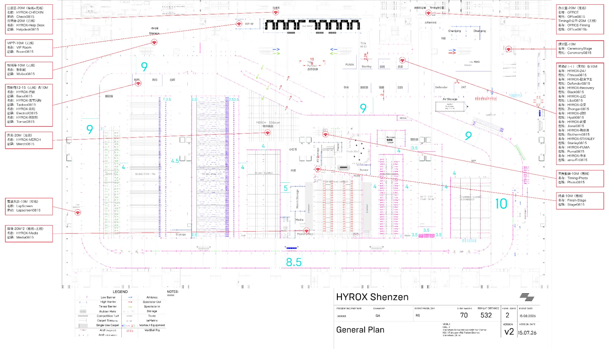
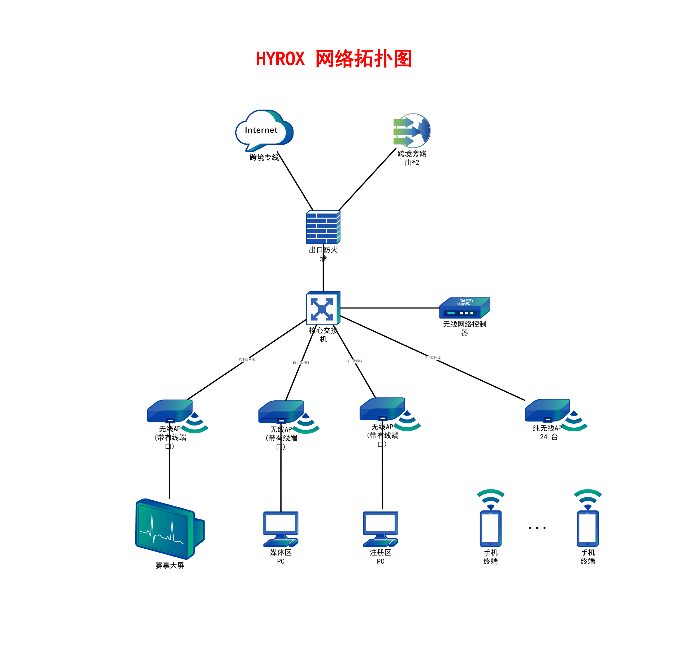

01
可用
关键终端优先有线化，多路径出口与无线冗余降低单点失效风险。

以锐捷为主要网络产品体系，由航天信息完成需求统筹、方案集成、工程实施、测试验收和赛时保障。目标不是“有网络”，而是让注册、直播、交易与赛事运营在高压场景下持续可用。
在北京冰丝带，让网络成为赛事节奏的一部分，而不是风险来源。
北京站首次扩展到四日赛制，意味着网络不只要承受瞬时高峰，更要应对长时间连续运行、跨团队协作和动态变化。航天信息将客户反馈转化为工程目标：关键业务优先、跨境路径可切换、无线体验可观测、故障过程可恢复。
锐捷负责承载赛事场景所需的网关、交换、无线和统一管理能力；航天信息负责把产品能力转化为可落地的北京赛事交付体系。
关键终端优先有线化，多路径出口与无线冗余降低单点失效风险。
按注册、直播、商业和办公进行 VLAN/QoS 分级，统一看见链路与终端体验。
把检测、判定、切换、回切和升级流程写入赛时手册，并通过彩排验证。
点击任一卡片，可跳转至动态拓扑并查看对应场景。我们不回避问题，而是把每个问题转化为可设计、可测试、可验收的改造动作。
网络响应慢会延长单人办理时间，并在高峰期快速放大为排队、拥堵和选手体验下降。
跨境路径抖动、上行拥塞或单路径故障，都会造成画面卡顿、断续和内容回传失败。
展台和 Merch 网络掉线会直接阻断支付与交易，并把技术问题放大为销售损失和伙伴体验问题。
工作人员办公网络卡顿会拖慢信息同步、赛事协调和现场决策，影响整场活动执行节奏。
拓扑以用户原始结构图为基础进行工程化表达。切换不同场景，可查看跨境专线、旁路 A/B、锐捷核心与无线体系如何共同保护注册、直播、交易和办公业务。
抗干扰布线解决物理基础，两组旁路软件路由解决跨境路径不确定性；锐捷网关、交换与无线体系进一步承担业务隔离、流量优先、体验优化和统一管理。
关键链路采用屏蔽型抗干扰线缆，配套规范端接、接地和链路测试，重点保障大屏、注册、媒体及 AP 回传。
对应掉线与传输不稳跨境专线与旁路 A/B 持续接受质量探测，通过防抖、会话保持和回切机制选择更优路径。
对应直播卡顿注册、直播、支付和办公分区承载，关键流量在拥塞和故障降级时仍获得更高优先级。
对应业务互相争抢采用锐捷无线控制与高密 AP，结合信道、功率、覆盖方向和终端体验进行现场射频优化。
对应展台与移动终端统一监控链路、设备、AP 和终端体验；建立告警分级、备件、升级路径与赛时值守机制。
对应故障定位慢当前阶段以产品层级确定方案，不在现场勘察前锁定型号和数量，避免形成不准确的物料与成本承诺。
深圳布局图证明了同类赛事具有注册、媒体、计时、终点、赞助商、Merch 与办公等多业务并存的复杂性；但北京冰丝带的点位、容量和设备数量必须独立确认。

航天信息不仅提供网络设备集成，更承担客户需求翻译、第三方协调、工程实施、测试验收、赛时值守与赛后复盘，让技术方案对业务结果负责。
统筹运营商、场馆、锐捷、计时、直播、赞助商和现场运营团队。
热线、在线、远程与上门协同，支持项目交付及持续运维。
具备研发团队与数据能力，可扩展监控、报表和赛事数字化应用。
以信息安全、IT 服务管理和质量体系支撑规范化交付。
确认人数、终端、媒体上行、公众网络、第三方系统和责任边界。
核对运营商、机房、光纤、供电、布线、遮挡、安装和施工窗口。
形成 HLD/LLD、锐捷产品层级、VLAN、QoS、SSID、路由与监控策略。
完成抗干扰布线、设备安装、配置、业务终端和第三方系统联调。
验证注册高峰、直播推流、支付、无线并发、路径切换和恢复流程。
驻场监控、告警分级、备件替换、运营商协同和快速升级。
提交运行报告、问题记录、配置备份与其他城市赛事复用建议。
建议召开 60–90 分钟联合需求确认会，并协调场馆、运营商、计时与直播团队共同参加。会后由航天信息形成正式网络设计、锐捷产品物料、施工计划、测试用例和赛时保障手册。
